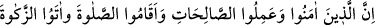
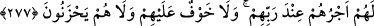

“Mahk”, bir şeyin ay gibi, yok oluncaya kadar peyder pey azalmasıdır. İşte faiz alan
kişinin durumu böyledir. Allah, içerisine fâiz karışan malın bereketini giderir, onu yok
eder ve daha sonra çocukları ondan istifâde edemezler.
Allah verilen sadakaların sevâbını kat kat artırır ve onu bereketlendirir. İçerisinden
sadaka verilen malı Allah ziyâdeleştirir. Hz. Peygamber (s.a.) şöyle buyurmuştur:
“Sizden biriniz yeni doğan tayını terbiye edip büyüttüğü gibi Allah verilen sadakayı
kabûl edip büyütür.”[256]
Yine Peygamber (s.a.): “Zekât maldan hiçbir şey eksiltmez.”[257] buyurmuştur.
Allah, haram olan şeyleri helâl saymakta ısrar eden ve onları işlemekte direten
kimselerden asla râzı olmaz. Çünkü sevgi ve rızâ ancak tevbe edip dönenler içindir.
277. İman edip iyi işler yapan, namaz kılan ve zekât verenler varya, onların
mükâfatları Rableri katındadır. Onlara korku yoktur. Onlar üzüntü de çekmezler.
Namaz ve zekâtın, sâlih amellerden olmasına rağmen husûsî olarak tekrar
zikredilmeleri, diğer bütün sâlih amellerden farklı oldukları içindir.
Dünyada olan hırs ve tama sebebiyle fâiz yiyen kimse aç köpek gibidir. Yer yer
doymaz. Karnı iyice şişer. O kadar ağırlaşır ki yürümek için ayağa kalksa karnının
ağırlığı onu yere düşürür. İşte kıyâmet günü fâiz yiyenlerin hâli böyle olacaktır. Ne
güzel söylenmiştir:
İnsan büyük bir kemiği boğazından geçirebilir,
Fakat o kemik ya insanın karnını yırtar, ya da zarar verir.
Akıllı kimse, dünya ve âhırette taşıyamayacağı şeyi yemez. Dünya malı elde etmede
ortayolu tutan ve bu uğurda haksızlıktan kaçınan kimselere müjdeler olsun! Bunlar fâizin
vebâlinden kurtulurlar. Bunlar mal toplamaya istekleri de olsa alış-veriş yoluyla mal
kazanan sadaka ve zekâtlarını veren tâcir gibidir. Bunlara kazandıkları mal, bir zarar
vermez. Çünkü şerîatın emrine göre hareket etmişler ve hak sâhibine hakkını
vermişlerdir. Ama fâiz yiyenler böyle değildir.
Rivâyet edildiğine göre Peygamberimiz (s.a.): Kan parasından ve câriyeleri fuhşa
zorlayarak gelir elde etmekten nehyetmiş, fâiz yiyene, yedirene, yazana ve şâhidlikte
bulunana, dövme yapana, yaptırana ve resim çizene lânet etmiştir.[258]
Rasûlullah (s.a.) şöyle buyurmuştur: “Fâizin yetmiş küsür çeşidi vardır. En aşağısı
kişinin anasıyla cima etmesi gibidir”[259] Bu hadîs-i şerîfi duyan kimsenin hemen
Allah’a tevbe etmesi gerekir. Fakat bunu ancak ehl-i kalb olan; zihnini toplayarak
dikkatle kulak veren yapabilir.
Bir kimse, daha fazla olarak geri verilmesi şartıyla borç verirse bu yarar sağlayan bir